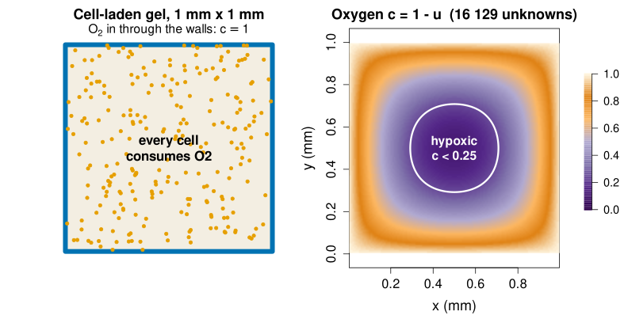
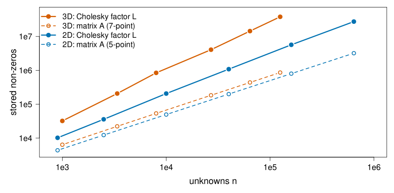
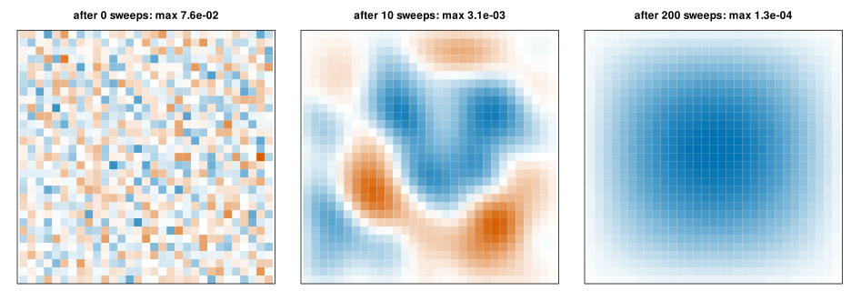
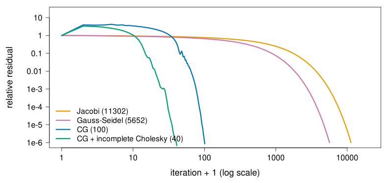
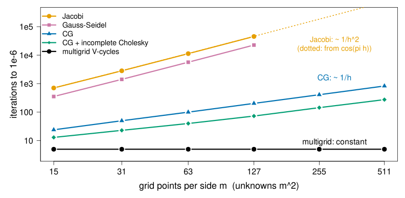
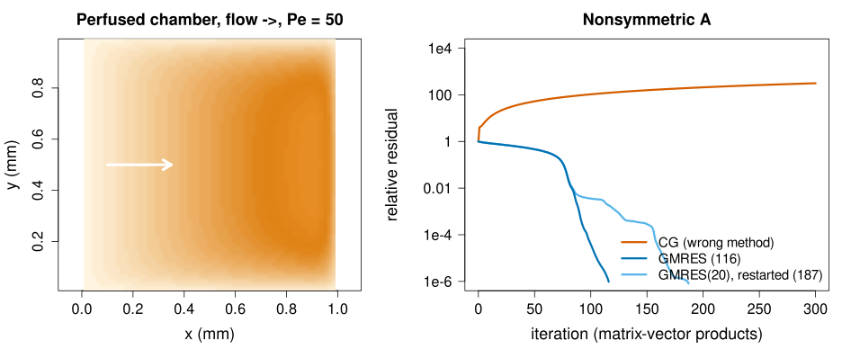
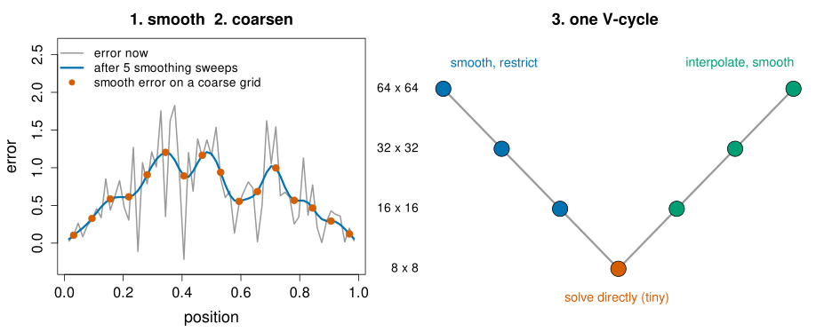

Further reading: not part of the course.
This material is not included in the course, but it is relevant if you want to learn more about the topic.
Iterative linear solvers in depth
Part 11 — Further reading (optional)
Numerical analysis for biologists
About this lecture
Structure: symmetric, banded, sparse ended with a glimpse of Jacobi and conjugate gradient. This optional lecture explains why they behave as they do, and what is used in practice.
On 2D and especially 3D grids, a sparse direct solve fills in: memory and time explode. Iterative methods only need products A\mathbf{x}.
Jacobi and Gauss–Seidel are splittings. Their speed is the spectral radius of an iteration matrix (eigenvalues again), and it gets worse as the grid is refined.
Conjugate gradient (SPD matrices) needs about \sqrt{\kappa} iterations; preconditioning makes \kappa smaller; GMRES handles nonsymmetric matrices; multigrid needs the same number of iterations on every grid.
Biology: oxygen in a cell-laden gel, refined until each grid point is one cell, and then in 3D.
An iterative method improves a guess using only A\mathbf{x}: O(\text{nnz}) work per step, no fill-in, no factor stored.
Jacobi:\mathbf{x} \leftarrow \mathbf{x} + D^{-1}(\mathbf{b} - A\mathbf{x}), D = diagonal of A. It took about 4160 iterations; CG took about 240.
Jacobi gains digits at a fixed rate (linear convergence) and diverges for \begin{pmatrix}1&2\\2&1\end{pmatrix}; CG needs ASPD.
Check: monitor the residual\|\mathbf{b} - A\mathbf{x}\|, stop on a tolerance, report when the iteration limit is hit.
Open questions from then: why 4160 and 240? Why does Jacobi diverge for the 2\times2 matrix? And what if A is not symmetric?
Biology: oxygen in a culture chamber

A 1 mm × 1 mm gel with cells, oxygen enters through all four walls (concentration 1 = ambient). Cells consume it: hypoxic core where c < 0.25 (about 5 % O₂).
Steady state: -D\,\Delta c = -q. With u = 1 - c (the oxygen deficit): -\Delta u = \Phi, u = 0 on the walls, \Phi = qL^2/(Dc_0) = 12.
At h = 7.8 µm (about one grid point per cell): 16 129 unknowns. Centre c = 0.116; 14 % of the gel is hypoxic.
The matrix: a 2D Laplacian
library(Matrix)lap1 <-function(m) bandSparse(m, k =-1:1,diagonals =list(rep(-1, m -1), rep(2, m), rep(-1, m -1)))lap2 <-function(m) { I <-Diagonal(m); T <-lap1(m); kronecker(I, T) +kronecker(T, I) }m <-127; A <-lap2(m); b <-rep(12/ (m +1)^2, m^2) # multiplied through by h^2c(n =nrow(A), nnz =nnzero(A))# n nnz# 16129 80137u <-solve(A, b) # sparse direct solve (Cholesky, reordered)1- u[(m^2+1) /2] # oxygen in the centre# [1] 0.1159863
Each row: 4u_{ij} - u_{i-1,j} - u_{i+1,j} - u_{i,j-1} - u_{i,j+1} = \Phi h^2. SPD, five non-zeros per row.
kronecker builds the 2D operator from the 1D one; the same trick with three factors gives 3D (seven non-zeros per row).
Why iterative? Fill-in in 2D and 3D

Cholesky with the best ordering Matrix finds:
grid
unknowns
nnz(A)
nnz(L)
time
2D 800²
640 000
3.2 M
27 M
11 s
3D 50³
125 000
0.86 M
38 M
52 s
3D 100³
10⁶
6.9 M
~600 M
~1 h
In 2D the factor is 9 times larger than A; in 3D 44 times, growing like n^{4/3} (time like n^2). A 1 mm³ tissue block at 10 µm needs ~7 GB for L.
CG on that block: 6.9 M non-zeros stored (83 MB), 203 iterations, 6 s in R.
Jacobi and Gauss–Seidel as splittings
Split A = M - N with M easy to solve. Then A\mathbf{x} = \mathbf{b} becomes the fixed-point iteration \mathbf{x}_{k+1} = \mathbf{x}_k + M^{-1}(\mathbf{b} - A\mathbf{x}_k).
method
M
one step means
Jacobi
diagonal D
every point: average of its 4 old neighbours (+ source)
Gauss–Seidel
lower triangle of A (incl. diagonal)
sweep through the grid, use new values as soon as they exist
Four interior points, A = lap2(2), \mathbf{b} = (1,1,1,1), exact x_i = 0.5, start at 0:
splitting <-function(A, b, M, tol =1e-6, maxit =1e5) { x <-numeric(length(b))for (it in0:maxit) { r <- b - (A %*% x)[, 1] # residualif (sqrt(sum(r^2)) < tol *sqrt(sum(b^2))) return(it) x <- x +as.vector(solve(M, r)) # x <- x + M^{-1} r }NA# not converged}m <-63; A <-lap2(m); b <-rep(12/ (m +1)^2, m^2)c(jacobi =splitting(A, b, Diagonal(x =diag(A))), gauss_seidel =splitting(A, b, tril(A)))# jacobi gauss_seidel# 11302 5652
Stop on the relative residual\|\mathbf{r}\| / \|\mathbf{b}\| < 10^{-6}. tril keeps the lower triangle; solve with a triangular sparse M is a forward substitution.
3969 unknowns, and still 11 302 Jacobi sweeps. Gauss–Seidel takes exactly half. Why these numbers?
The rate is a spectral radius
The exact solution is a fixed point, so the error \mathbf{e}_k = \mathbf{x}_k - \mathbf{x} obeys \mathbf{e}_{k+1} = T\,\mathbf{e}_k, \qquad T = I - M^{-1}A. Write \mathbf{e}_0 in eigenvectors of T: each component is multiplied by its eigenvalue every step. The slowest one wins: error \approx \rho(T)^k, spectral radius\rho(T) = \max|\lambda_i(T)|.
Converges if and only if \rho(T) < 1. Iterations per digit: \ln 10 / (-\ln\rho). For the 2\times2 of Part 3, \rho = 2: divergence.
For this grid \rho_J = \cos \pi h, \rho_{GS} = \cos^2 \pi h. At m = 63: \rho_J = 0.99880, 1910 sweeps per digit, \approx 11\,460 for six digits (measured: 11 302).
Why they slow down as the grid is refined

Gauss–Seidel error, m = 31.
Each sweep only talks to neighbours: wiggly error is averaged away fast, smooth error barely moves.
\rho_J = \cos\pi h \approx 1 - \tfrac{\pi^2h^2}{2}, so sweeps per digit \approx 0.47/h^2: halve h, 4× the sweeps (and 4× the unknowns).
The same fact as a condition number: \kappa(A) = \lambda_{\max}/\lambda_{\min} \approx 4/(\pi^2h^2) (Pivoting, norms and conditioning): 1659 at m = 63, 26 560 at m = 255.
Failure: a small step is not a small error
A tempting stopping rule: stop when the iterate no longer changes.
u <-as.vector(solve(A, b)) # reference, m = 63x <-numeric(m^2); d <-diag(A)for (it in1:1e5) { step <- (b - (A %*% x)[, 1]) / d # Jacobi step x <- x + stepif (max(abs(step)) <1e-6) break# "nothing changes any more"}c(it, max(abs(x - u)))# [1] 5.875000e+03 8.286336e-04
Steps of 10^{-6}, but the error is 830 times larger: with \rho close to 1 the iteration crawls. Error \approx step \cdot \rho/(1-\rho) = 8.29\times10^{-4}.
Check: stop on the residual relative to \|\mathbf{b}\|; on a test problem, compare with a direct solve; look at the residual curve: a straight line on a log scale with a shallow slope means “still far away”.
Conjugate gradient: the Krylov idea
After k products with A, every method on these slides has \mathbf{x}_k in the Krylov space\mathcal{K}_k = \text{span}\{\mathbf{b}, A\mathbf{b}, A^2\mathbf{b}, \dots, A^{k-1}\mathbf{b}\}. Jacobi uses only the newest direction with a fixed weight. CG picks the best\mathbf{x}_k in all of \mathcal{K}_k:
For SPD A, solving A\mathbf{x} = \mathbf{b} = minimising f(\mathbf{x}) = \tfrac12 \mathbf{x}^TA\mathbf{x} - \mathbf{b}^T\mathbf{x}. CG minimises the error in the “A-norm” over \mathcal{K}_k.
Search directions \mathbf{p}_k are A-conjugate (\mathbf{p}_i^TA\mathbf{p}_j = 0): a step never spoils earlier ones. Each step: one A\mathbf{p}, two dot products, three vector updates. Memory: 4 vectors.
Bound: error \le 2\left(\frac{\sqrt\kappa - 1}{\sqrt\kappa + 1}\right)^k, so iterations \approx \tfrac12\sqrt{\kappa}\,\ln(2/\text{tol}): \sqrt\kappa instead of \kappa.
CG against the splittings

Same chamber, m = 63, tolerance 10^{-6}: Jacobi 11 302, Gauss–Seidel 5652, CG 100, CG with an incomplete-Cholesky preconditioner 40.
CG’s residual is not monotone (it minimises the A-norm of the error, not the residual), but the trend is steep.
Iterations against grid size

Doubling m: Jacobi and Gauss–Seidel ×4 (slope 2), CG and preconditioned CG ×2 (slope 1), multigrid constant (5 V-cycles).
Work = iterations × unknowns: in 2D, Jacobi \sim h^{-4}, CG \sim h^{-3}, multigrid \sim h^{-2}, i.e. O(n).
Preconditioning
Solve M^{-1}A\mathbf{x} = M^{-1}\mathbf{b} instead, with M \approx A and M\mathbf{z} = \mathbf{r} cheap. CG then needs \sim\sqrt{\kappa(M^{-1}A)} iterations. Only one line of CG changes: \mathbf{z} = M^{-1}\mathbf{r}.
Jacobi (diagonal):M = D. Free. Removes bad scaling (rows of very different size); does nothing if the diagonal is constant.
Incomplete Cholesky, IC(0): run Cholesky but drop every fill-in entry: L keeps the pattern of A, LL^T \approx A. Two triangular solves per iteration.
pcg <-function(A, b, Minv =function(r) r, tol =1e-6, maxit =1e4) { x <-numeric(length(b)); r <- b; z <-Minv(r); p <- z; rz <-sum(r * z)for (it in1:maxit) { Ap <- (A %*% p)[, 1]; alpha <- rz /sum(p * Ap) x <- x + alpha * p; r <- r - alpha * Apif (sqrt(sum(r^2)) < tol *sqrt(sum(b^2))) return(list(x = x, it = it)) z <-Minv(r); rz_new <-sum(r * z); p <- z + (rz_new / rz) * p; rz <- rz_new }list(x = x, it =NA) # not converged}
Experiment: what does a preconditioner buy?
A second chamber: a dense cell aggregate (radius 0.3 mm) in the middle where D is 10× lower (more realistic for a drug molecule than for oxygen). A = -\nabla\cdot(D\nabla\,\cdot), still SPD; the diagonal now varies from 0.4 to 4.
CG iterations to 10^{-6}
uniform, m = 63
uniform, m = 127
aggregate, m = 63
aggregate, m = 127
no preconditioner
100
203
197
399
Jacobi M = D
100
203
103
208
incomplete Cholesky
40
73
49
97
d <-diag(A); L <-ic0(A, m); Lt <-t(L) # ic0: exercise C4c(pcg(A, b)$it, pcg(A, b, function(r) r / d)$it,pcg(A, b, function(r) as.vector(solve(Lt, solve(L, r))))$it)
Jacobi: useless on the uniform chamber, halves the count with a jump in D. IC: 2–4× fewer, but still doubling with m.
Flow through the chamber: A is not symmetric

Perfused chamber: medium flows left to right, u = 100 µm/s, Péclet number uL/D = 50; upwind differences as in Flow plus diffusion. Now A \ne A^T.
CG fails silently: the true residual grows to 314 after 300 iterations. Check:isSymmetric(A) before using CG.
GMRES converges in 116 iterations; restarted GMRES(20) in 187.
GMRES in one slide
Generalised Minimal RESidual: the \mathbf{x}_k \in \mathcal{K}_k with the smallest residual. Arnoldi builds an orthonormal basis Q of \mathcal{K}_k (Gram–Schmidt); a tiny least-squares problem gives the best combination.
gmres <-function(A, b, k =300, tol =1e-6) { Q <-matrix(0, length(b), k +1); H <-matrix(0, k +1, k) beta <-sqrt(sum(b^2)); Q[, 1] <- b / betafor (j in1:k) { w <- (A %*% Q[, j])[, 1] # one product with Afor (i in1:j) { H[i, j] <-sum(Q[, i] * w); w <- w - H[i, j] * Q[, i] } H[j +1, j] <-sqrt(sum(w^2)); Q[, j +1] <- w / H[j +1, j] e1 <-c(beta, rep(0, j)); Hj <- H[1:(j +1), 1:j, drop =FALSE] y <-qr.solve(Hj, e1) # (j+1) x j least squaresif (sqrt(sum((e1 - Hj %*% y)^2)) < tol * beta) break }list(x =as.vector(Q[, 1:j] %*% y), it = j)}
Residual never increases. Price: stores all k basis vectors, work per step grows with k. Restart after 20–50 steps (GMRES(k)); restarting can stall. On the symmetric chamber: GMRES 99, CG 100 (CG is the cheap version).
Multigrid in one picture

A few Gauss–Seidel sweeps make the error smooth. Smooth error on a fine grid is wiggly on a coarser grid, where sweeps are cheap and effective again. Recurse down to a tiny grid, solve, interpolate back up.
One V-cycle costs a few fine-grid sweeps; 5 cycles to 10^{-6} for every m from 15 to 511: O(n) work.